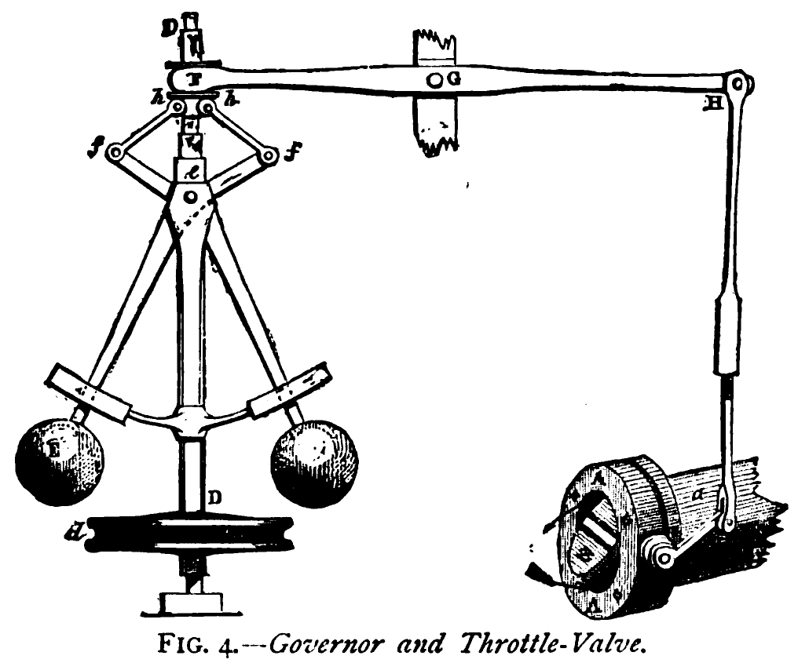

name: inverse layout: true class: center, middle, inverse --- ##.lgray[Feedback Control in Electrophysiology for<br>] ##.lgray[Great Good] Jon Newman MWL@MIT 2016 Feb [homepage](http://www.mit.edu/~jpnewman/) | [github](https://github.com/jonnew) --- layout: false .left-column[ ## Closed-loop systems ] .right-column[ - System output is used to inform the input in some way - Most closed-loop electrophysiology falls into this category - "Activity-guided actuation"<sup>.red[1]</sup> - "Closed-loop stimulation"<sup>.red[1]</sup> - Does not imply __control over system state__ .footnote[ .red[1] D lab paper. ] ] --- layout: false .left-column[ ## Feedback control systems ] .right-column[ <blockquote> ... maintain a prescribed relationship between one system variable and another by using their difference as a means of control <sup>.red[1]</sup> </blockquote> <blockquote> ... a method of controlling a system by reinserting into it the results of its past performance <sup>.red[2]</sup> </blockquote> .footnote[ .red[1] AIEE Committee Report. _Proposed Symbols and Meanings for Feedback Control Systems_<br> .red[2] Norbert Wiener _The Human Use of Human Beings: Cybernetics and Society_ ] ] --- layout: false .left-column[ ## Distinction Closed-loop<br> vs.<br> Feedback<br> control ] .right-column[ __Feedback control systems are closed-loop systems, but not necessarily vice versa__ - Error signal(s) - Continuous update of actuation - Control over a system state to match reference .red[__Why does this matter__?] ] --- layout: false .left-column[ ## Feedback control ### History ] .right-column[ __Feedback control is one of the most important innovations in human history__ - Ubiquitous in all domains of engineering - Concept is ancient, literally .pull-left[ __Water clocks of Alexandria__ - Circa 250 BC, Ktesbios<sup>.red[1]</sup> ] .pull-right[ __Centrifugal governor__ - 1788, James Watt<sup>.red[2]</sup>  ] .footnote[ .red[1] Otto Mayr _The Origins of Feedback Control_<br> .red[2] _Discoveries & Inventions of the Nineteenth Century_ 13th edition ] ] --- layout: false .left-column[ ## Feedback control ### History ] .right-column[ .pull-left[ __Negative feedback amplifier__<sup>.red[1]</sup> - 1927, Harold Steven Black - Allows communication systems to be instantiated using electrical/optical circuit elements <img class="right" src="./figures/Block_Diagram_for_Feedback.svg.png" width="70%"/> ] .pull-right[ __Autonomous vehicles__ - Tons of sensors and actuators - Very sophisticated control algorithms ] .red[__Feedback control is used everywhere__] .small[ Thermal control, voltage and current supply regulation, automobile cruise control, anti-lock brakes, electrical amplifiers, autonomous robots, quadcopters, satellite positioning control, motor speed regulation, chemical reactor flow control, pressure regulation, optical power regulation, pH control, fly by wire, servo motors, Etc, Etc, ... ] .footnote[ .red[1] https://en.wikipedia.org/wiki/Negative_feedback_amplifier<br> ] ] --- layout: false .left-column[ ## Feedback control ### Disturbances ] .right-column[ __Why is feedback control so powerful?__ 1. Compensation - Disturbances due to measurement and actuation noise - Strong plant dynamics - Non-stationary dynamics - Stabilize systems and linearize input/output relationships ] --- layout: false .left-column[ ## Feedback control ### Disturbances ### Measurement ] .right-column[ __Why is feedback control so powerful?__ 1. Compensation 2. Control signal reflects plant state and dynamics ] --- layout: false .left-column[ ## Feedback control ### Disturbances ### Measurement ### Decoupling ] .right-column[ __Why is feedback control so powerful?__ 1. Properly designed feedback control functions in the face of 2. Actuation signal reveals system dynamics that are hard or impossible to measure directly 3. Decouple system variables that are __causally__, and possibly __reciprocally__ related ] name: inverse layout: true class: center, middle, inverse --- ## Feedback control in Neuroscience --- layout: false .left-column[ ## Feedback control in Neuroscience ### Voltage clamp ] .right-column[ Feedback control to measure ionic conductances that are difficult to measure otherwise - Membrane voltage non-linearly, and reciprocally coupled to ionic conductances - Feedback control cancels conductances to hold the voltage - Current required for cancellation is a measure of the ionic current at the voltage setpoint ] --- layout: false .left-column[ ## Feedback control in Neuroscience ### Artificial embodiment ] .right-column[ __Feedback control to enforce learning rules in dissociated cortical networks.<sup>.red[1,2]</sup>__ .pull-left[ <video controls loop> <source src="movie.mp4" type="video/mp4"> <source src="movie.ogg" type="video/ogg"> Your browser does not support the video tag. </video> ] .pull-right[ <img class="right" src="./figures/animat-performance.png"/> ] .footnote[ .red[1] DeMarse T.B. et al., _The Neurally Controlled Animat: Biological Brains Acting with Simulated Bodies_ Auton. Robots, 2001<br> .red[2] Bakkum D.J. et al. _Spatio-temporal electrical stimuli shape behavior of an embodied cortical network in a goal-directed learning task_, J. Neural Eng., 2008 ] ] --- layout: false .left-column[ ## Feedback control in Neuroscience ### Artificial embodiment ] .right-column[ __The Silent Barrage Project<sup>.red[1,2]</sup>__ <img class="right" src="./figures/fncir-06-00098-g009.png"/> .footnote[ .red[1] DeMarse T.B. et al., _The Neurally Controlled Animat: Biological Brains Acting with Simulated Bodies_ Auton. Robots, 2001<br> .red[2] Bakkum D.J. et al. _Spatio-temporal electrical stimuli shape behavior of an embodied cortical network in a goal-directed learning task_, J. Neural Eng., 2008 ] ] --- layout: false .left-column[ ## Feedback control in Neuroscience ### Virtual reality ] .right-column[ Feedback control at the behavioral level in the larval zebrafish ] --- layout: false .left-column[ ## Optogenetics and feedback control ] .right-column[ __Optogenetic<sup>.red[1, 2]</sup> tools are particularly well suited for use in feedback controls__ <br> <br> - Minimal electrical recording artifact - Relatively narrow excitation spectra - Bi-directional actuation - Genetic specificity - Millisecond temporal resolution .footnote[ .red[1] Zemelman B. et al. _Selective photostimulation of genetically chARGed neurons_, Neuron, 2002.<br> .red[2] Boyden E.S. et al. _Millisecond-timescale, genetically targeted optical control of neural activity_, Nat. Neuro., 2005. ] ] --- layout: false .left-column[ ## Synaptic scaling ] .right-column[ __Case study: decoupling neurotransmission to identify the trigger for synaptic scaling__ <br> <br> Patch images, previous syn scaling results and citations <br> - Synaptic scaling is XXX - It is hard to know what triggers it because neurotranmssion and spiking are causally and reciprocally related. - Diagram - Results .footnote[ .red[1] Zemelman B. et al. _Selective photostimulation of genetically chARGed neurons_, Neuron, 2002.<br> .red[2] Boyden E.S. et al. _Millisecond-timescale, genetically targeted optical control of neural activity_, Nat. Neuro., 2005. ] ] --- layout: false .left-column[ ## Synaptic Scaling ### Optogenetic feedback control ] .right-column[ <img class="right" src="./figures/F11.large.jpg"/> .footnote[ .red[1] J. Newman et al. _Optogenetic feedback control of neural activity_, eLife, 2015<br> ] ] --- layout: false .left-column[ ## Optogenetic feedback control ] .right-column[ Using optogentic feedback control to decoupling spiking and neurotransmission - TODO: Image with different bin sizes <img class="right" src="./figures/F11.large.jpg"/> .footnote[ .red[1] M-f. Fong et al. _Upward synaptic scaling is dependent on neurotransmission rather than spiking_, Nat. Commun., 2015<br> ] ] --- layout: false .left-column[ ## Synaptic Scaling ### Neurotransmission vs. spiking ] .right-column[ Decrased neurotransmission, not spiking, is the reason for the scaling effect. - Meaning: - scaling may be epiphenominon - If it does exist in vivo and is the cause of some malities [xx], then this changes how it should be treated. Optogenetic tools are particularly well suited for use in feedback control of network activity. ] --- layout: false .left-column[ ## Optenetic feedback control 2.0 ### Spatial light modulation ### Control more interesting features of neural activity than firing rate ### Hardware and software that is feedback control capable ] .right-column[ Decrased neurotransmission, not spiking, is the reason for the scaling effect. - Meaning: - scaling may be epiphenominon - If it does exist in vivo and is the cause of some malities [xx], then this changes how it should be treated. Optogenetic tools are particularly well suited for use in feedback control of network activity. ] --- layout: false ## Acknowledgements #### Potter lab #### Wenner lab #### Wilson lab #### Funding --- template: inverse ## End --- template: inverse ## Appendix --- layout: false .left-column[ ## neurorighter ] .right-column[ A complete NI DAQ-based multichannel data acquisition system with the following features: - Closed-loop recording, (MUXed) stimulation on all electrodes, and lots of auxiliary analog and digital IO - Semi low latency feedback (5-10 ms) - Extensible at runtime using plugin architecture - Low cost .red[*] <img class="right" src="./figures/https://dfb83c72-a-62cb3a1a-s-sites.googlegroups.com/site/neurorighter/home/main_spike-pile_small.jpg?attachauth=ANoY7cormTwIuniq_RlgujfUfEo4S-qpxHGDogHjW63UeCVy3rvjLayFYgxA0yfZTLkQvVdmfj1PkrhQagysHNT4gAvpyamhhRTsSUBKJvRBxj1PVBTwGFfdkwi-KVHPB2s1Fm9374CfvS7mjEuOWDagKnfmW0dkWoU0BY-MTpgwn7Iz1tPRcvWA3TxAOvK0aUQFZ75eBD8kp0REg5JzA4Hxhrv6SA6SbHRxaE7L8P0ce4pT7d8_sIw%3D&attredirects=0" width="70%"/> .footnote[ .red[*] material cost < 10000 USD<BR> [repository link](https://github.com/rzellertownson/neurorighter) ] ] --- layout: false .left-column[ ## neurorighter ### - Example ] .right-column[ Controlling network firing levels using multichannel stimulation and PI controller <img class="right" src="./figures/http://www.frontiersin.org/files/Articles/32539/fncir-06-00098-HTML/image_m/fncir-06-00098-g005.jpg"/> ] --- layout: false .left-column[ ## neurorighter ### - Used for actual science ] .right-column[ Newman et al. [*eLife* (4:e07192) 2015](http://www.nature.com/ncomms/2015/150309/ncomms7339/full/ncomms7339.html) <img class="right" src="./figures/http://cdn-site.elifesciences.org/content/elife/4/e07192/F11.medium.gif" /> Fong et al. [*Nat. Commum.* (6:6339) 2015](http://www.nature.com/ncomms/2015/150309/ncomms7339/full/ncomms7339.html) <img class="right" src="./figures/http://www.nature.com/ncomms/2015/150309/ncomms7339/images_article/ncomms7339-f6.jpg" /> ]